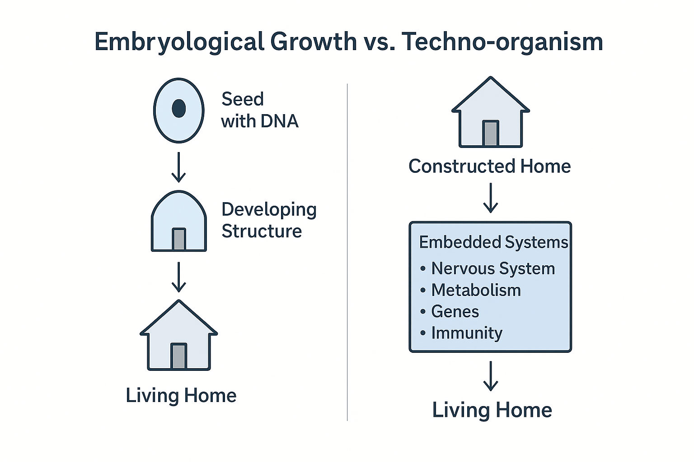
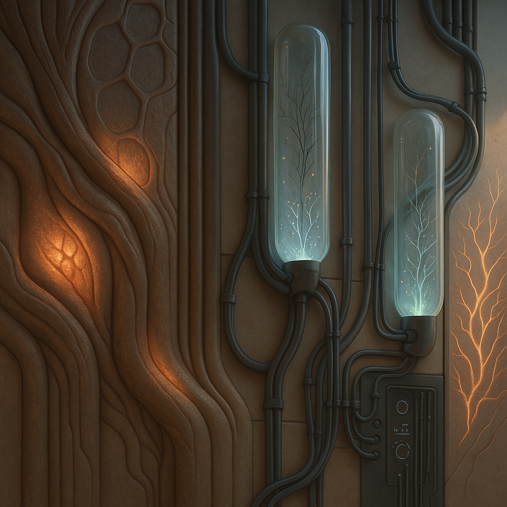

Living Civilization
From static construction to architectures that sense, learn, and evolve.
The larger vision is civilizational: technological matter does
not remain inert forever. It begins to circulate, respond, store
memory, and form a new layer of organized intelligence inside the
biosphere.
This site translates that scale into a usable first step. Before
there is a planetary network, there is a house the user can open,
inspect, connect, and gradually teach.


First transition
A living home is not fantasy. It is a constructed house plus embedded systems.
A normal house becomes a living house when sensing, metabolism,
feedback, immunity, and decision logic are layered into it. That
is the conceptual bridge this platform tries to make visible.

Material language
The user should feel the house as an interface, not only as a shell.
The project carries both engineering logic and atmosphere. Pipes,
skins, memory, and adaptive surfaces are part of the same body.